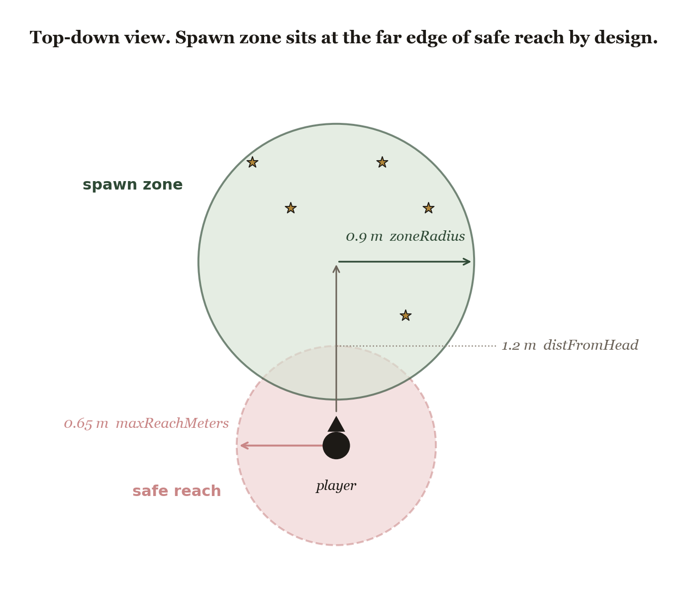

A standalone Meta Quest 2 Unity build for LGMD, FSHD, and myotonic dystrophy patients. Butterflies caught with bare hands in a Gaussian-splat garden, an overextension guardrail that redirects rather than punishes, and every parameter tunable from the Unity Inspector.
A standalone Unity APK for the Meta Quest 2, with no controllers and no PC tether, built for the roughly 250,000 Americans living with progressive muscle disease, a population for whom exercise is one of the few interventions that slows decline. The patient stands in a World Labs Marble-generated Japanese garden and catches floating butterflies with bare hands. The design protects one outcome: keep the patient moving, never let them overextend.
The build is five C# scripts on Unity 2022.3 LTS and the Meta XR SDK, shipped end-to-end in an 8-hour hackathon. The time budget forced minimalism: every script does one job, every catchable lives off one tag, and the entire safety branch is one independent Update() loop. Hand tracking and the over-reach check run as separate branches that converge on a GameManager singleton owning score, timer, and UI.
The novelty is the patient population, not the engine. Every commercial VR rehab product is built for stroke, traumatic brain injury, or chronic pain; none target muscular dystrophy. AdaptVR does, and tilts hard toward "the patient cannot lose": generous catch radius, no fail screen, redirection rather than punishment.
In Limb-Girdle Muscular Dystrophy (LGMD), Facioscapulohumeral Muscular Dystrophy (FSHD), and myotonic dystrophy, exercise is one of the only clinically validated ways to slow functional decline. It also sits inside a hard paradox.
The Meta Quest 2 makes a deployable answer structurally possible, and is cheap enough at retail to reach patients. Controllers are a real barrier here: trigger pulls need exactly the grip strength and finger isolation the disease takes away.
OVRSkeleton pipeline reads wrist position directly, so the patient never grips, squeezes, or presses anything.The hand-tracking SDK and the VR engine are off-the-shelf. The contribution is the target population and the safety posture it requires.
Section 3 is the engineering that holds those four commitments on the Quest 2.
OVRManager.HandTrackingSupport = HandsOnly. LeftHandAnchor / RightHandAnchor carry OVRHand and OVRSkeleton; no controllers are wired in.Skybox/Panoramic material.zoneCenter / zoneRadius sphere, picking a new target once within 5 cm of the current one._target.y >= zoneCenter.y - zoneRadius * 0.5), so butterflies never sink below a comfortable reach line.OnTriggerEnter checks for tag "PlayerHand". On a catch: optional particle effect and sound, a call to GameManager.Instance.RegisterCatch(), renderer and collider hidden for 1.2 seconds, then a respawn at a fresh point in the same zone.One empty GameObject. At Start() it computes a spawn center at cameraTransform.position + flattened-forward * distFromHead (default 1.2 m), instantiates count butterflies (default 5) at random points inside a sphere of zoneRadius = 0.9 m around it, writes zoneCenter and zoneRadius into each controller, and steps back. Ongoing motion is the controller's problem.
One per hand. Every Update() walks handSkeleton.Bones, finds Hand_WristRoot, and snaps the GameObject to it. A kinematic Rigidbody (required for OnTriggerEnter under Unity's physics rules) and a 10 cm trigger SphereCollider tagged "PlayerHand" form the only handshake with the butterfly script.

Independent of the catch loop. Every frame it measures Euclidean distance from centerEyeAnchor.position to each wrist bone. If either exceeds maxReachMeters (default 0.65 m), GameManager.ShowWarning() surfaces a soft cue for 2.5 seconds. No fail state; the score is untouched.
GameManager.Instance), so the butterflies and the overextension detector find it without scene wiring._catches, _elapsed, _sessionActive, _warningTimer. Default session is 300 seconds.OverextensionDetector.EitherOverextended every frame and calls ShowWarning() with a 2.5 second display window per cue.Reused across sessions, these scale difficulty to MRC grade and disease profile without recompiling.
ButterflySpawner.count: butterflies at session start.distFromHead: spawn distance from the head. Closer for weaker patients, further for stronger.zoneRadius: how spread out the butterflies are inside the zone.maxReachMeters: the overextension guardrail threshold.sessionDuration: session length in seconds.Validated qualitatively on Quest 2 hardware. Butterflies respawn cleanly inside the zone after each catch. The 15 cm butterfly trigger radius is deliberately generous because patients with MRC 3 to 4 strength have imprecise distal control.
distFromHead from 0.9 m to 1.5 m and zoneRadius from 0.6 m to 1.1 m on the Inspector produced the expected difficulty changes without code edits.The 3 to 5 times adherence figure in §2.1 is from the literature. It motivates the design; it is not a measurement of AdaptVR.
The clinical case is short. The population needs to exercise, and every commercial VR rehab platform fails it. The Quest 2 is finally cheap and capable enough to close that gap with hand-tracked play that respects what the disease takes away. If even a fraction of the 70% home-programme dropout is recovered by a build patients want to put on, the result is muscle function preserved longer, slower loss of independence, and fewer of the cascade complications that follow when neuromuscular patients stop moving. No fail screen, redirection over punishment, therapist-tunable parameters, and no controllers are what make it deployable, rather than something that demos well and rehabilitates nobody.
The garden environment is a Gaussian-splat export from World Labs Marble. Hand tracking is the Meta XR SDK. The clinical framing draws on published guidance from TREAT-NMD on exercise in progressive muscle disease.